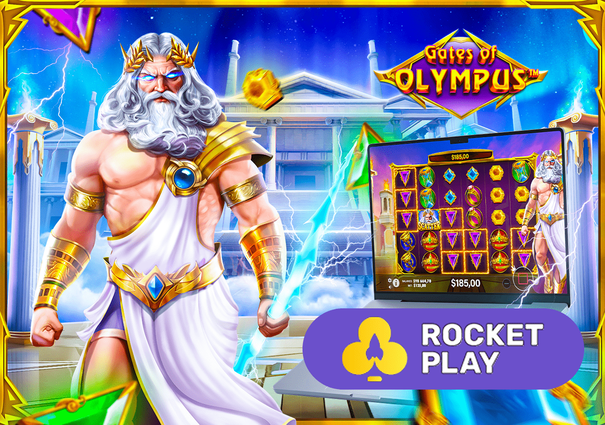
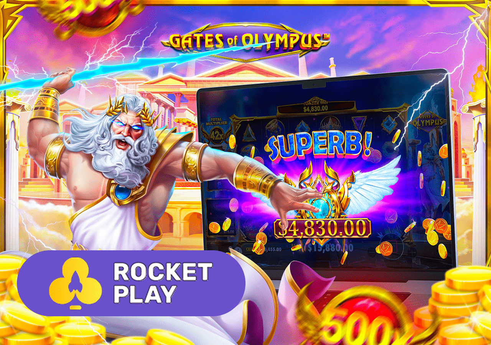

While Rocketplay doesn’t offer a specific gates of olympus casino bonus, players can leverage its generous welcome package and ongoing promotions to boost their gates of olympus slot game experience. Here’s how you can maximize your rewards:
Gates of Olympus Slot at Rocketplay
Dive into the divine world of the Gates of Olympus slot at Rocketplay, where the mythical power of Zeus fuels thrilling gameplay and the chance for gates of olympus huge win moments. In this comprehensive guide, we’ll explore what is gates of olympus, how to play, and gates of olympus tips and tricks to maximize your gates of olympus win potential. Sign up at Rocketplay today, claim your 100% bonus up to AU$1,000 + 100 free spins, and ascend to divine riches!
Gates of Olympus Bonuses at Rocketplay
- Welcome Package: New players at Rocketplay can claim a 100% match bonus up to AU$1,000 + 100 free spins on their first deposit. Make your deposit within the first hour of registration to qualify. The second deposit offers a 200% bonus up to AU$1,000, perfect for extending your gates of olympus gameplay. Free spins are valid on selected slots, including the game slot gates of olympus, with a 40x wagering requirement.
- Friday Bonus: Deposit on Fridays to receive up to 100+ free spins, depending on your deposit amount. These spins can be used on the gates of olympus slot machine, increasing your gates of olympus scatter chance.
- Sunday Gift: Get a 50% deposit bonus with a minimum deposit of AU$30, ideal for funding your gates of olympus casino slot sessions.
- High Roller Bonus: Use a unique promo code to unlock a 50% bonus for larger deposits, perfect for players chasing the gates of olympus max win.
- Slot Machine Cashback: Enjoy 15% cashback on slot losses, including the gates of olympus online slot, to keep the divine action going.
- RocketMart Rewards: Earn “astrocoins” while playing the slot gates of olympus. Redeem them for bonuses, free spins, or other perks in Rocketplay’s rewards shop.
To claim these offers, sign up at Rocketplay, deposit at least AU$20, and check the promotions page for terms and conditions. These bonuses enhance your chances of landing a gates of olympus big win or even the gates of olympus mega jackpot.
Detailed Info About Gates of Olympus Slot
The gates of olympus game is a 6x5 grid slot released by Pragmatic Play in 2021, with the gates of olympus 1000 version launched in 2023. Known for its high volatility and gates of olympus rtp of 96.5%, this gates of olympus casino game offers a gates of olympus slot max win of 5,000x in the original and 15,000x in the gates of olympus 1000 max win. The game’s “pay anywhere” mechanic, cascading reels, and multipliers (2x–1,000x) make it a standout at Rocketplay. Here’s a detailed look at what is gates of olympus and why it’s a top choice for Australian players.

How to Start Playing GatesofOlympus?
Ready to pursue those sky-high multipliers? Understanding the Rocketplay Olympus registration process and deposit procedures is crucial. Note that deposits are optional for those preferring to start with free play. In fact, beginning with practice mode is recommended as it provides valuable familiarity with the platform’s features, game mechanics, and interface.

|
Feature |
Details |
|
Game Type |
Video Slot |
|
Provider |
Pragmatic Play |
|
Release Date |
2021 (Original), 2023 (Gates of Olympus 1000) |
|
RTP |
96.5% (gates of olympus 1000 rtp) |
|
Volatility |
High (gates of olympus volatility) |
|
Max Win |
5,000x (Original), 15,000x (max win on gates of olympus 1000) |
|
Bet Range |
AU$0.20–AU$100 |
|
Platforms |
Desktop, Android, iOS |
|
Key Features |
Cascading Reels, Multipliers, Free Spins, Bonus Buy, Ante Bet |
Legality of Rocketplay in Australia
Playing the gates of olympus slot at Rocketplay is legal for Australian players, as the casino operates under a Curacao license (8048/JAZ2020-013), recognized internationally. The Interactive Gambling Act 2001 permits offshore-licensed casinos to offer services in Australia, ensuring a safe and regulated environment for the gates of olympus online casino. Rocketplay adheres to strict standards, with eCOGRA certification for fairness and transparency, making it a trusted gates of olympus site.
Rocketplay Gates of Olympus Reviews
Australian players rave about the gates of olympus casino slot at Rocketplay. Here’s what they say:
- Emma, Sydney: “The gates of olympus slot online at Rocketplay is incredible! The multipliers and free spins keep me hooked. I used the welcome bonus and hit a gates of olympus big win of AU$2,000!”
- Liam, Melbourne: “Rocketplay’s app makes playing the game gates of olympus so easy. Fast withdrawals and great support. The gates of olympus scatter feature is my favorite!”
- Sophie, Brisbane: “I love the gates of olympus pokie at Rocketplay. The gates of olympus 1000 version is intense, and the cashback helps me play longer.”
While some players have reported verification delays, Rocketplay’s support team resolves issues promptly, earning a 4.6/5 rating on ProductReview.com.au and a 4-star TrustScore on Trustpilot.
Features of the Gates of Olympus Slot
The gates of olympus slot game stands out with unique features tailored for Australian players at Rocketplay:
- Pay Anywhere Mechanic: Land 8+ matching symbols anywhere on the 6x5 grid to win, enhancing gates of olympus win potential.
- Cascading Reels: Winning symbols disappear, allowing new ones to drop and create multiple wins in a single spin.
- Multipliers: Zeus triggers multiplier orbs (2x–500x in the original, up to 1,000x in gates of olympus 1000), boosting payouts.
- Free Spins: Land 4+ gates of olympus scatter symbols to trigger 15 free spins, where multipliers accumulate for gates of olympus big wins.
- Ante Bet & Bonus Buy: Increase your gates of olympus scatter chance with the Ante Bet (25% higher stake) or buy the bonus round for 100x your bet.
- Game History: Access stats on recent wins and multipliers to inform your gates of olympus strategy.
- High Volatility: The gates of olympus volatility ensures thrilling gameplay with the potential for gates of olympus max wins.
These features make the slot temple gates of olympus a dynamic and rewarding experience at Rocketplay.
How to Start Playing Gates of Olympus
Getting started with the gates of olympus slot at Rocketplay is simple and takes just 10–15 minutes. Follow these steps to dive into the gates of olympus casino game:
Registration and Verification
- Visit Rocketplay’s official website and click “Sign Up” in the top right corner.
- Enter your email, create a password, and select AUD as your currency.
- Confirm your account via the verification email (check spam if needed).
- Complete identity verification by uploading a passport or driver’s license photo to unlock withdrawals and bonuses.
Deposit
To play the gates of olympus slot online for real money, fund your account:
- Click the wallet icon and select “Deposit.”
- Choose a payment method (e.g., Visa, Bitcoin, PayID) with a minimum deposit of AU$20.
- Enter your deposit amount to qualify for the 100% welcome bonus + 100 free spins.
- Follow the instructions to complete the transaction, which is instant for most methods.
First Game
- Navigate to the “Slots” section and search for Gates of Olympus or Gates of Olympus 1000.
- Set your bet (AU$0.20–AU$100) using the plus/minus buttons.
- Click “Spin” to start the gates of olympus gameplay. Aim for 8+ matching symbols or 4+ scatters to trigger free spins.
- Use the gates of olympus double chance (Ante Bet) to boost scatter odds or the Bonus Buy for instant free spins.
New to the game? Try the gates of olympus slot demo to master gates of olympus how to play before betting real money.
Try Gates of Olympus for Free
The gates of olympus 1000 slot demo and original gates of olympus slot demo are available at Rocketplay, allowing you to practice without risking real money. Access the demo by:
- Logging into Rocketplay and navigating to the “Slots” section.
- Selecting Gates of Olympus and clicking “Demo.”
- Playing with virtual credits to test gates of olympus tips and strategies.
The demo mode mirrors the real-money version, including gates of olympus scatter triggers and multipliers, making it ideal for learning how to win gates of olympus or refining your gates of olympus strategy. Use it to explore the gates of olympus max win chance risk-free.
The gates of olympus online slot is fully optimized for mobile play at Rocketplay, accessible via their dedicated app or mobile site. The Rocketplay app enhances the gates of olympus mobile experience with seamless navigation and fast loading times.
Android
To play the slot gates of olympus on Android:
- Visit Rocketplay’s website and navigate to the “Mobile App” section.
- Download the gates of olympus apk (20–200MB) from the provided link.
- Enable “Unknown Sources” in Settings > Security.
- Install the app and log in to access the gates of olympus casino slot.
iOS
Rocketplay doesn’t offer a dedicated iOS app, but the mobile-optimized site supports the gates of olympus ios experience:
- Open Safari and visit Rocketplay’s website.
- Add a shortcut to your home screen via Share > Add to Home Screen.
- Log in and play the gates of olympus online game instantly.
The mobile platform supports all features, including gates of olympus 1000 play, bonuses, and withdrawals, ensuring a divine experience on the go.
Gates of Olympus Predictor & Hacks
There’s buzz around gates of olympus tricks and predictors, but can you really predict the gates of olympus slot? The answer is no. The gates of olympus casino game uses a Provably Fair random number generator (RNG), certified by eCOGRA, ensuring random outcomes. Third-party “predictor” apps or hacks claiming to forecast gates of olympus scatter triggers or gates of olympus max wins are fraudulent and risky, potentially leading to data theft or account bans. Stick to legitimate gates of olympus strategies like bankroll management and the Ante Bet feature to enhance your gameplay safely.
Payments Methods at Rocketplay
Rocketplay offers a wide range of payment options for the gates of olympus online casino, ensuring fast and secure transactions.
Deposit
|
Payment Method |
Limits |
Fees |
Processing Time |
|
Visa/MasterCard |
AU$20–AU$6,000 |
None |
Instant |
|
PayID |
AU$20–AU$4,000 |
None |
Instant |
|
Bitcoin |
AU$30–No Limit |
None |
Instant |
|
Neosurf |
AU$20–AU$4,000 |
None |
Instant |
|
Bank Transfer |
AU$50–AU$6,000 |
None |
1–3 Days |
Withdrawal
|
Payment Method |
Limits |
Fees |
Processing Time |
|
PayID |
AU$20–AU$4,000 |
None |
Up to 24 Hours |
|
Bitcoin |
AU$30–AU$10,000 |
None |
Up to 24 Hours |
|
Bank Transfer |
AU$50–AU$6,000 |
None |
1–3 Days |
|
Skrill/Neteller |
AU$20–AU$4,000 |
None |
Up to 24 Hours |
Withdrawals are processed within 24 hours, but verification is required for first-time payouts. Upload documents early to avoid delays.
Support
Rocketplay offers 24/7 support for gates of olympus online slots players:
- Live Chat: Access via the website or app; agents respond within 1 minute.
- Email: Contact support@rocketplay.com for detailed queries.
Social Media: Engage on Instagram, Facebook, or Twitter for updates and exclusive bonuses.
Responsible Gaming
Rocketplay prioritizes responsible gaming for gates of olympus slots players:
- Self-Assessment: Use the responsible gaming page to evaluate your habits.
- Limits: Set deposit, loss, or wager limits in your account settings.
- Self-Exclusion: Opt for cooling-off periods or permanent exclusion if needed.
- Support: Contact Gambling Help Online (1800 858 858) for assistance.
Playing the gates of olympus pokie is thrilling, but set time and budget limits to avoid addiction.
Gates of Olympus vs Gates of Olympus 1000
What is the difference between gates of olympus and gates of olympus 1000? Here’s a breakdown of gates of olympus vs gates of olympus 1000:
- Max Win: The original offers a 5,000x gates of olympus slot max win, while max win on gates of olympus 1000 reaches 15,000x.
- Multipliers: Original multipliers range from 2x–500x; gates of olympus 1000 extends to 1,000x.
- Volatility: Both have high gates of olympus volatility, but gates of olympus 1000 feels more intense.
- Thematic Variants: Gates of Olympus 1000 includes a Christmas-themed version.
- Gameplay Tweaks: The 1000 version has enhanced multiplier accumulation in free spins.
Is gates of olympus 1000 better? It depends on your preference for higher risk and reward. Both are available at Rocketplay, with the gates of olympus 1000 slot demo for testing.
Gates of Olympus Tips and Strategies
Maximize your gates of olympus win with these gates of olympus tips and tricks:
- Bankroll Management: Set a budget (e.g., AU$50/session) and stick to smaller bets (AU$0.20–AU$1) to extend playtime.
- Use Ante Bet: Activate the gates of olympus double chance (25% higher stake) to increase scatter odds.
- Bonus Buy: Purchase the free spins round for 100x your bet to chase gates of olympus big wins.
- Play Demo: Practice with the gates of olympus 1000 slot demo to learn mechanics.
- Timing: Some players speculate that gates of olympus best time to play is during off-peak hours, though RNG ensures randomness.
- Focus on Free Spins: The gates of olympus scatter triggers the bonus round, where multipliers stack for gates of olympus max win chance.
- Avoid Chasing Losses: Take breaks during dry spells to maintain control.
These gates of olympus strategies enhance your chances without relying on unverified hacks.
FAQ
Yes, the gates of olympus slot is legal at Rocketplay, which operates under a Curacao license (8048/JAZ2020-013), compliant with Australian regulations.
Yes, the gates of olympus slot online is available via Rocketplay’s Android app or mobile-optimized site for iOS.
The minimum deposit is AU$20, qualifying for the welcome bonus to play the gates of olympus casino slot.
Rocketplay offers a 100% bonus up to AU$1,000 + 100 free spins, usable on the game slot gates of olympus.
No, the gates of olympus game uses a Provably Fair RNG, making predictors and hacks ineffective and risky.